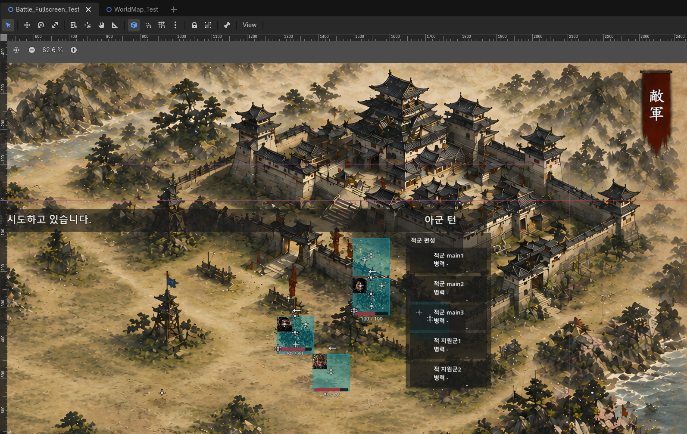

EASTWAR 개발일지 #022
성격, 목표, 그리고 압박 — 적 AI를 설계하다
2026년 6월 25일월드맵 국정 시스템이 자리를 잡고 나니, 그 위에서 움직이는 상대가 너무 단순했다. 지금까지 적 세력의 턴은 사실상 placeholder에 가까웠다. 병력을 좀 채우고, 가끔 침공 여부를 굴리는 정도. 이번 작업은 이 적 턴에 진짜 행동을 붙이는 일이었다. 완전한 AI를 한 번에 만들겠다는 욕심은 부리지 않았다. 대신 "적도 뭔가 하고 있다"는 느낌부터 보수적으로 쌓아 올리기로 했다.
우선 말이 되게 움직이게
첫 단계는 적 세력이 최소한의 턴 행동을 하도록 만드는 거였다. 병력을 보강하고, 침공 여부를 판단하고, 그 결과를 기록하는 흐름. 여기에 곧바로 안전장치를 붙였다. 병력이 겨우 80명인 성이 갑자기 침공을 감행하는 것 같은 이상한 그림이 나오지 않도록, 침공에 필요한 최소 병력 기준을 정했다. 침공 빈도는 그대로 두고, 침공의 "질"만 끌어올린 셈이다.
그다음은 외교와 첩보 쪽으로 살짝 발을 뻗었다. 위나라와 촉나라, 오다와 도요토미처럼 플레이어와 상관없는 세력끼리도 관계가 미세하게 움직이기 시작했다. 관계 점수가 2~3점 정도 오르내리는 수준으로, 동맹이나 적대 전환 같은 큰 변화는 아직 없었다. 고구려가 한성 근처를 정찰했다는 로그도 뜨기 시작했는데, 이것도 실제로 민심이나 병력을 깎는 건 아니고 어디까지나 "지켜보고 있다"는 압박감을 주는 선이었다. 적 턴 요약도 그만큼 풍성해졌다. 이전엔 "병력 보강하고 가끔 침공함"이 전부였다면, 이제는 "외교 접촉 1건, 첩보 압박 흔적 1건"까지 한 줄에 담기기 시작했다.
세력마다 성격이 생기다
다음 단계에서는 적 세력마다 성향이라는 걸 심었다. 모든 세력이 똑같이 랜덤하게 움직이는 대신, 어떤 세력은 공격적이고 어떤 세력은 외교나 첩보 쪽에 무게를 두도록 가중치를 심은 것이다. 성향을 넣고 나서 곧바로 한 게 있는데, "더 똑똑하게 만들기"가 아니라 "이 성향이 게임을 망치지 않는지" 확인하는 QA였다. 너무 튀지 않는지, 너무 안 보이지 않는지를 먼저 조였다.

성격에서 목표로, 목표에서 압박으로
성향만 심어놓으니 뭔가 부족했다. "공격적인 성격"이라고만 하면 너무 막연하니까, 이번엔 나라마다 구체적인 목표를 하나씩 심었다. 고구려는 한성을 노리고, 몽골은 북쪽으로 밀고 내려오고, 오다와 도요토미는 교토와 오사카 쪽으로 세력을 넓히려 한다, 이런 식으로. 사람으로 치면 "저 사람 욕심이 많다"에서 "저 사람은 지금 내 자리를 노리고 있다"로 한 단계 더 구체적으로 들어간 셈이다.
이제 적이 한 턴 동안 움직이는 순서는 이렇게 정리됐다. 성격을 보고 → 목표를 정하고 → 병력을 어디에 보탤지 고르고 → 외교나 첩보로 견제할지 정하고 → 침공할 대상을 고르고 → 실제로 싸우고 → 결과를 화면에 보여준다.
여기서 진짜 중요한 변화가 하나 있었다. 예전에는 성격과 목표가 그냥 "이 나라는 좀 더 공격적이구나" 정도로만 느껴졌다면, 이제는 적이 "이번 턴엔 여기를 압박하겠다"는 구체적인 속셈을 갖기 시작한 거다. 다만 그 속셈이 플레이어를 직접 공격하거나 손해를 입히는 건 아직 아니다. 적은 계획만 세우고, 플레이어는 화면에 뜨는 힌트로 그 낌새를 눈치챌 수 있는 정도까지만 만들었다. 다 보여주면 재미가 없으니까, "쟤네 뭔가 노리고 있다"는 느낌만 주고 정확히 뭘 하는지는 살짝 숨겨뒀다.
꼬이지 않게 안전장치를 박다
이렇게 여러 기능이 겹겹이 쌓이다 보니, 딱 하나 위험한 순간이 있었다. 플레이어가 전투를 시작해야 하는 상황인데, 어쩌다 턴 종료 버튼이 한 번 더 눌리는 경우였다. 그러면 이미 진행 중이던 적 턴이 또 한 번 돌아버리고, 침공 판정도 다시 굴러가면서 순서가 완전히 꼬일 수 있었다. 비유하자면 게임이 두 개의 이야기를 동시에 진행하려다 헷갈려버리는 상황이다.
그래서 규칙을 하나 박아뒀다. "지금 전투로 넘어가야 하는 상황이면, 턴 종료도 막고 적의 침공 판정도 건너뛴다." 이 규칙 하나로 적 턴 전체가 훨씬 안정적으로 돌아가게 됐다.
마지막으로는 강도 조절만 했다. 적이 압박하고, 침공하고, 첩보 활동을 벌이는 빈도가 너무 잦지도 너무 뜸하지도 않게 수치를 다듬는 걸로 이 구간을 마무리했다. 적이 이렇게 구체적인 속셈을 가지고 움직이기 시작했으니, 이제는 플레이어 쪽에서도 나라 안에서 대응할 힘을 키울 방법이 필요해졌다. 그게 다음 작업, 테크트리였다.